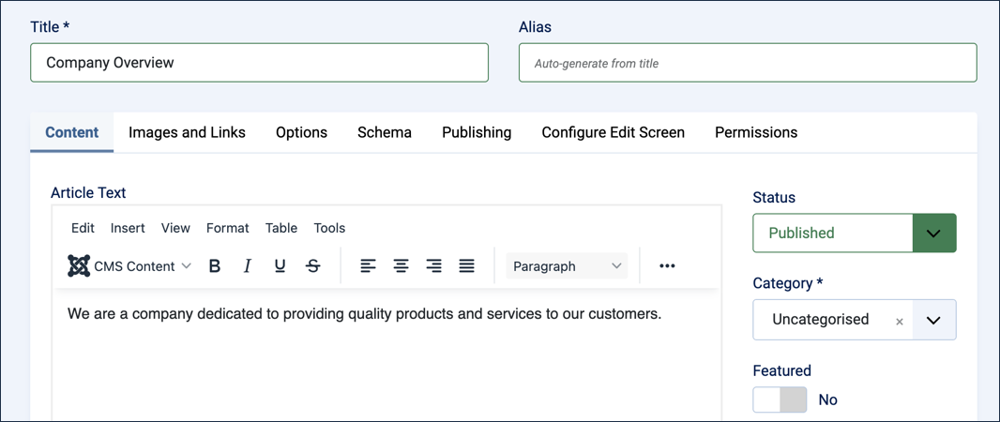
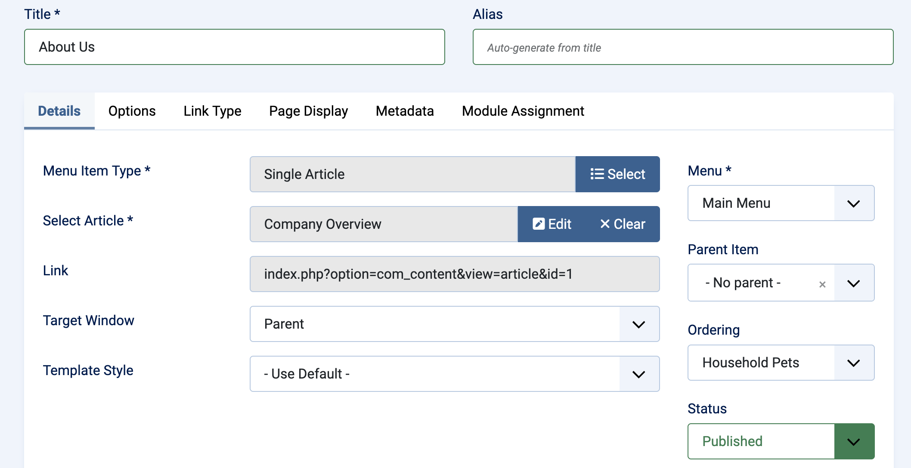
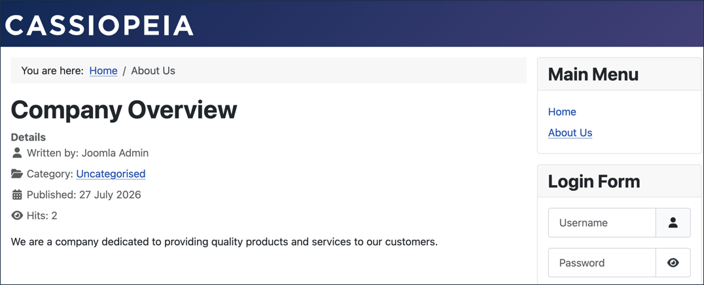

Log in to Joomla backend and navigate to the Home Dashboard.
View the frontend of the site. Find the main menu and note the menu items. We will be adding a new menu item.
Return to the Home Dashboard. In the Administrator Menu, click Content > Articles.
Click New. Result: A new-article form appears.
Title:Company Overview
Article Text:We are a company dedicated to providing quality products and services to our customers.

The new-article form filled in
Click Save & Close.
In the Administrator Menu, click Menus > Main Menu.
Click New. Result: A new-menu-item form appears.
Title:About Us
Menu Item Type: click Select, then in the popup expand Articles and select Single Article.
Select Article: click Select, then in the popup select Company Overview.

The new-menu-item form, configured to link to Company Overview
Save & Close
View the site, click About Us in the Main Menu to view your article.

The published Company Overview article, reached via the About Us menu item
Concepts
Articles in Joomla are the main content types on a web page and can display text and images.
A menu item is a link to an article, grouped with other links in a menu.
In this tutorial we only had links to individual articles. This is called a menu item type of Single Article. In later tutorials we will see other menu item types.